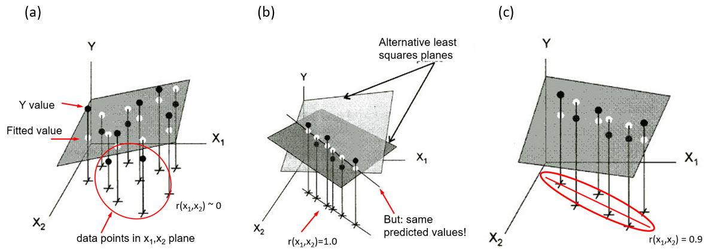

6 Collinearity & Ridge Regression
Packages In this chapter we use the following packages. Load them now.
Some of my collinearity diagnostics have large values, or small values, or whatever they are not supposed to be * What is bad? * If bad, what can I do about it?
In univariate multiple regression models, we usually hope to have high correlations between the outcome \(y\) and each of the predictors, \(x_1, x_2, \dots\), but high correlations among the predictors can cause problems in estimating and testing their effects. The quote above shows the a typical quandary of some researchers in trying do understand these problems and and take steps to resolve them. This chapter illustrates the problems of collinearity, describes diagnostic measures to asses its effects, and presents some novel visual tools for these purposes using the VisCollin package.
One class of solutions for collinearity involves regularization methods such as ridge regression. Another collection of graphical methods, generalized ridge trace plots, implemented in the genridge package, sheds further light on what is accomplished by this technique.
6.1 What is collinearity?
Recall the standard classical linear model for a response variable \(y\) with a collection of predictors in \(\mathbf{X} = (\mathbf{x}_1, \mathbf{x}_2, ..., \mathbf{x}_p)\)
\[ \begin{eqnarray*} \mathbf{y} & =& \beta_0 + \beta_1 \mathbf{x}_1 + \beta_2 \mathbf{x}_2 + \cdots + \beta_p \mathbf{x}_p + \mathbf{\epsilon} \\ & = & \mathbf{X} \mathbf{\beta} + \mathbf{\epsilon} \; , \end{eqnarray*} \] for which the ordinary least squares solution is:
\[ \widehat{\mathbf{b}} = (\mathbf{X}^T \mathbf{X})^{-1} \; \mathbf{X}^T \mathbf{y} \; , \] with sampling variances and covariances \(\text{Var} (\widehat{\mathbf{b}}) = \sigma^2 \times (\mathbf{X}^T \mathbf{X})^{-1}\) and \(\sigma^2\) is the variance of the residuals \(\mathbf{\epsilon}\), estimated by the mean squared error (MSE).
In the limiting case, when one \(x_i\) is perfectly predictable from the other \(x\)s, i.e., \(R^2 (x_i | \text{other }x) = 1\),
- there is no unique solution for the regression coefficients \(\mathbf{b} = (\mathbf{X}^T \mathbf{X})^{-1} \mathbf{X} \mathbf{y}\);
- the standard errors \(s (b_i)\) of the estimated coefficients are infinite and t statistics \(t_i = b_i / s (b_i)\) are 0.
This extreme case reflects a situation when one or more predictors are effectively redundant, for example when you include two variables \(x\) and \(y\) and their sum \(z = x + y\) in a model, or use ipsatized scores that sum to a constant. More generally, collinearity refers to the case when there are very high multiple correlations among the predictors, such as \(R^2 (x_i | \text{other }x) \ge 0.9\). Note that you can’t tell simply by looking at the simple correlations. A large correlation \(r_{ij}\) is sufficient for collinearity, but not necessary — you can have variables \(x_1, x_2, x_3\) for which the pairwise correlation are low, but the multiple correlation is high.
The consequences are:
- The estimated coefficients have large standard errors, \(s(\hat{b_j})\). They are multiplied by the square root of the variance inflation factor, \(\sqrt{\text{VIF}}\), discussed below.
- This deflates the \(t\)-statistics, \(t = \hat{b_j} / s(\hat{b_j})\) by the same factor.
- Thus you may find a situation where an overall model is highly significant (large \(F\)-statistic), while no (or few) of the individual predictors are. This is a puzzlement!
- Beyond this, the least squares solution may have poor numerical accurracy (Longley 1967), because the solution depends on the determinant \(|\,\mathbf{X}^T \mathbf{X}\,|\), which approaches 0 as multiple correlations increase.
- As well, recall that the coefficients \(\hat{b}\) are partial coefficients, meaning the estimated change \(\Delta y\) in \(y\) when \(x\) changes by one unit \(\Delta x\), but holding all other variables constant. Then, the model may be trying to estimate something that does not occur in the data.
6.1.1 Visualizing collinearity
Collinearity can be illustrated in data space for two predictors in terms of the stability of the regression plane for a linear model Y = X1 + X2. In ?fig-collin-demo (adapted from Fox (2016), Fig. 13.2):
shows a case where \(X_1\) and \(X_2\) are uncorrelated as can be seen in their scatter in the horizontal plane (
+symbols). The regression plane is well-supported; a small change in Y for one observation won’t make much difference.In panel (b), \(X_1\) and \(X_2\) have a perfect correlation, \(r (x_1, x_2) = 1.0\). The regression plane is not unique; in fact there are an infinite number of planes that fit the data equally well. Note that, if all we care about is prediction (not the coefficients), we could use \(X_1\) or \(X_2\), or both, or any weighted sum of them in a model and get the same predicted values.
Shows a typical case where there is a strong correlation between \(X_1\) and \(X_2\). The regression plane here is unique, but is not well determined. A small change in Y can make quite a difference in the fitted value or coefficients, depending on the values of \(X_1\) and \(X_2\). Where \(X_1\) and \(X_2\) are far from their near linear relation in the botom plane, you can imagine that it is easy to tilt the plane substantially by a small change in \(Y\).
knitr::include_graphics("images/collin-demo.png"){#fig-collin-demo, fig-align=‘center’ width=100%}
It is also useful to visualize collinearity by comparing the representation in data space with the anologous view of the confidence ellipses for coefficients in beta space. To do so, we generate data from a known model \(y = 2 x_1 + 2 x_2 + \epsilon\) with \(\epsilon \tilde \mathcal{N} (0, 100)\) and various correlations between \(x_1\) and \(x_2\).
Working file: R/collin-data-beta.R
6.2 Measuring collinearity: Variance inflation factors
How can we measure the effect of collinearity? The essential idea is to compare, for each predictor the variance \(s^2 (\widehat{b_j})\) that the coefficient that \(x_j\) would have if it was totally unrelated to the other predictors to the actual variance it has in the given model.
For two predictors such as shown in ?fig-collin-demo the sampling variance of \(x_1\) can be expressed as
\[ s^2 (\widehat{b_1}) = \frac{MSE}{(n-1) \; s^2(x_1)} \; \times \; \left[ \frac{1}{1-r^2_{12}} \right] \] The first term here is the variance of \(b_1\) when the two predictors are uncorrelated. The term in brackets represents the variance inflation factor (Marquandt:70?), the amount by which the variance of the coefficent is multiplied as a consequence of the correlation \(r_{12}\) of the predictors. As \(r_{12} \rightarrow 1\), the variances approaches infinity.
More generally, with any number of predictors, this relation has a similar form, replacing the simple correlation \(r_{12}\) with the multiple correlation predicting \(x_j\) from all others,
\[ s^2 (\widehat{b_j}) = \frac{MSE}{(n-1) \; s^2(x_j)} \; \times \; \left[ \frac{1}{1-R^2_{j | \text{others}}} \right] \] So, we have that the variance inflation factors are:
\[ \text{VIF}_j = \frac{1}{1-R^2_{j \,|\, \text{others}}} \] In practice, it is often easier to think in terms of the square root, \(\sqrt{\text{VIF}_j}\) as the multiplier of the standard errors. The denominator, \(1-R^2_{j | \text{others}}\) is sometimes called tolerance, a term I don’t find particularly useful.
Note that when there are terms in the model with more than one df, such as education with four levels (and hence 3 df) or a polynomial term spaecified as poly(x, 3), the standard VIF calculation gives results that vary with how those terms are coded in the model. (FoxMonette:92?) define generalized, GVIFs as the inflation in the squared area of the confidence ellipse for the coefficients of such terms, relative to what would be obtained with uncorrelated data.
Example: This example uses the cars data set in the VisCollin package containing various measures of size and performance on 406 models of automobiles from 1982. Interest is focused on predicting gas mileage, mpg.
data(cars, package = "VisCollin")
str(cars)
#> 'data.frame': 406 obs. of 10 variables:
#> $ make : Factor w/ 30 levels "amc","audi","bmw",..: 6 4 22 1 12 12 6 22 23 1 ...
#> $ model : chr "chevelle" "skylark" "satellite" "rebel" ...
#> $ mpg : num 18 15 18 16 17 15 14 14 14 15 ...
#> $ cylinder: int 8 8 8 8 8 8 8 8 8 8 ...
#> $ engine : num 307 350 318 304 302 429 454 440 455 390 ...
#> $ horse : int 130 165 150 150 140 198 220 215 225 190 ...
#> $ weight : int 3504 3693 3436 3433 3449 4341 4354 4312 4425 3850 ...
#> $ accel : num 12 11.5 11 12 10.5 10 9 8.5 10 8.5 ...
#> $ year : int 70 70 70 70 70 70 70 70 70 70 ...
#> $ origin : Factor w/ 3 levels "Amer","Eur","Japan": 1 1 1 1 1 1 1 1 1 1 ...We fit a model predicting gas mileage (mpg) from the number of cylinders, engine displacement, horsepower, weight, time to accelerate from 0 – 60 mph and model year (1970–1982). Perhaps surprisingly, only weight and year appear to significantly predict gas mileage. What’s going on here?
cars.mod <- lm (mpg ~ cylinder + engine + horse + weight + accel + year,
data=cars)
Anova(cars.mod)
#> Anova Table (Type II tests)
#>
#> Response: mpg
#> Sum Sq Df F value Pr(>F)
#> cylinder 12 1 0.99 0.32
#> engine 13 1 1.09 0.30
#> horse 0 1 0.00 0.98
#> weight 1214 1 102.84 <2e-16 ***
#> accel 8 1 0.70 0.40
#> year 2419 1 204.99 <2e-16 ***
#> Residuals 4543 385
#> ---
#> Signif. codes: 0 '***' 0.001 '**' 0.01 '*' 0.05 '.' 0.1 ' ' 1We check the variance inflation factors, using car::vif(). We see that most predictors have very high VIFs, indicating moderately severe multicollinearity.
According to \(\sqrt{\text{VIF}}\), the standard error of cylinder has been multiplied by 3.26 and it’s \(t\)-value divided by this number, compared with the case when all predictors are uncorrelated. engine, horse and weight suffer a similar fate.
Connection with inverse of correlation matrix
In the linear regression model with standardized predictors, the covariance matrix of the estimated intercept-excluding parameter vector \(\mathbf{b}^\star\) has the simpler form, \[ \mathcal{V} (\mathbf{b}^\star) = \frac{\sigma^2}{n-1} \mathbf{R}^{-1}_{X} \; . \] where \(\mathbf{R}_{X}\) is the correlation matrix among the predictors. It can then be seen that the VIF\(_j\) are just the diagonal entries of \(\mathbf{R}^{-1}_{X}\).
More generally, the matrix \(\mathbf{R}^{-1}_{X} = (r^{ij})\), when standardized to a correlation matrix as \(-r^{ij} / \sqrt{r^{ii} \; r^{jj}}\) gives the matrix of all partial correlations, \(r_{ij \,|\, \textrm{others}}\). }
6.2.1 Collinearity diagnostics
OK, large VIF\(_j\) indicate predictor coefficients whose estimation is degraded due to large \(R^2_{j \,|\, \text{others}}\). But To go further, we need to determine:
- how many dimensions in the space of the predictors are associated with nearly collinear relations?
- which predictors are most strongly implicated in each of these?
Answsers to these questions are provided using measures developed by Belsley and colleagues (Belsley, Kuh, and Welsch 1980; Belsley:91a?). These measures are based on the eigenvalues \(\lambda_1, \lambda_2, \dots \lambda_p\) of the correlation matrix \(R_{X}\) of the predictors (preferably centered and scaled, and not including the constant term for the intercept), and the corresponding eigenvectors in the columns of \(\mathbf{V}_{p \times p}\), given by the the eigen decomposition \[ \mathbf{R}_{X} = \mathbf{V} \mathbf{\Lambda} \mathbf{V}^T \] By elementary matrix algebra, the eigen decomposition of \(\mathbf{R}_{XX}^{-1}\) is then \[ \mathbf{R}_{X}^{-1} = \mathbf{V} \mathbf{\Lambda}^{-1} \mathbf{V}^T \; , \tag{6.1}\] so, \(\mathbf{R}_{X}\) and \(\mathbf{R}_{XX}^{-1}\) have the same eigenvectors, and the eigenvalues of \(\mathbf{R}_{X}^{-1}\) are just \(\lambda_i^{-1}\). Using Equation 6.1, the variance inflation factors may be expressed as \[ \text{VIF}_j = \sum_{k=1}^p \frac{V^2_{jk}}{\lambda_k} \; , \] which shows that only the small eigenvalues contribute to variance inflation, but only for those predictors that have large eigenvector coefficients on those small components. These facts lead to the following diagnostic statistics for collinearity:
-
Condition indices: The smallest of the eigenvalues, those for which \(\lambda_j \approx 0\), indicate collinearity and the number of small values indicates the number of near collinear relations. Because the sum of the eigenvalues, \(\Sigma \lambda_i = p\) increases with the number of predictors \(p\), it is useful to scale them all in relation to the largest. This leads to condition indices, defined as \(\kappa_j = \sqrt{ \lambda_1 / \lambda_j}\). These have the property that the resulting numbers have common interpretations regardless of the number of predictors.
- For completely uncorrelated predictors, all \(\kappa_j = 1\).
- \(\kappa_j \rightarrow \infty\) as any \(\lambda_k \rightarrow 0\).
Variance decomposition proportions: Large VIFs indicate variables that are involved in some nearly collinear relations, but they don’t indicate which other variable(s) each is involved with. For this purpose, Belsley et. al. (1980) and Belsley (1991) proposed calculation of the proportions of variance of each variable associated with each principal component as a decomposition of the coefficient variance for each dimension.
These measures can be calculated using VisCollin::colldiag(). For the current model, the usual display contains both the condition indices and variance proportions. However, even for a small example, it is often difficult to know what numbers to pay attention to.
(cd <- colldiag(cars.mod, center=TRUE))
#> Condition
#> Index Variance Decomposition Proportions
#> cylinder engine horse weight accel year
#> 1 1.000 0.005 0.003 0.005 0.004 0.009 0.010
#> 2 2.252 0.004 0.002 0.000 0.007 0.022 0.787
#> 3 2.515 0.004 0.001 0.002 0.010 0.423 0.142
#> 4 5.660 0.309 0.014 0.306 0.087 0.063 0.005
#> 5 8.342 0.115 0.000 0.654 0.715 0.469 0.052
#> 6 10.818 0.563 0.981 0.032 0.176 0.013 0.004(Belsley:91a?) recommends that the sources of collinearity be diagnosed (a) only for those components with large \(\kappa_j\), and (b) for those components for which the variance proportion is large (say, \(\ge 0.5\)) on two or more predictors. The print method for "colldiag" objects has a fuzz argument controlling this.
print(cd, fuzz = 0.5)
#> Condition
#> Index Variance Decomposition Proportions
#> cylinder engine horse weight accel year
#> 1 1.000 . . . . . .
#> 2 2.252 . . . . . 0.787
#> 3 2.515 . . . . . .
#> 4 5.660 . . . . . .
#> 5 8.342 . . 0.654 0.715 . .
#> 6 10.818 0.563 0.981 . . . .The mystery is solved: There are two nearly collinear relations among the predictors, corresponding to the two smallest dimensions.
- Dimension 5 reflects the high correlation between horsepower and weight,
- Dimension 6 reflects the high correlation between number of cylinders and engine displacement.
Note that the high variance proportion for year (0.787) on the second component creates no problem and should be ignored because (a) the condition index is low and (b) it shares nothing with other predictors.
6.2.2 Tableplots
6.2.3 Collinearity biplots
6.3 Remedies for collinearity
6.4 Ridge regression
6.4.1 What is ridge regression?
6.4.2 Univariate ridge trace plots
6.4.3 Bivariate ridge trace plots
#> Writing packages to C:/R/Projects/Vis-MLM-quarto/bib/pkgs.txt
#> 11 packages used here:
#> base, car, carData, datasets, genridge, graphics, grDevices, methods, stats, utils, VisCollin